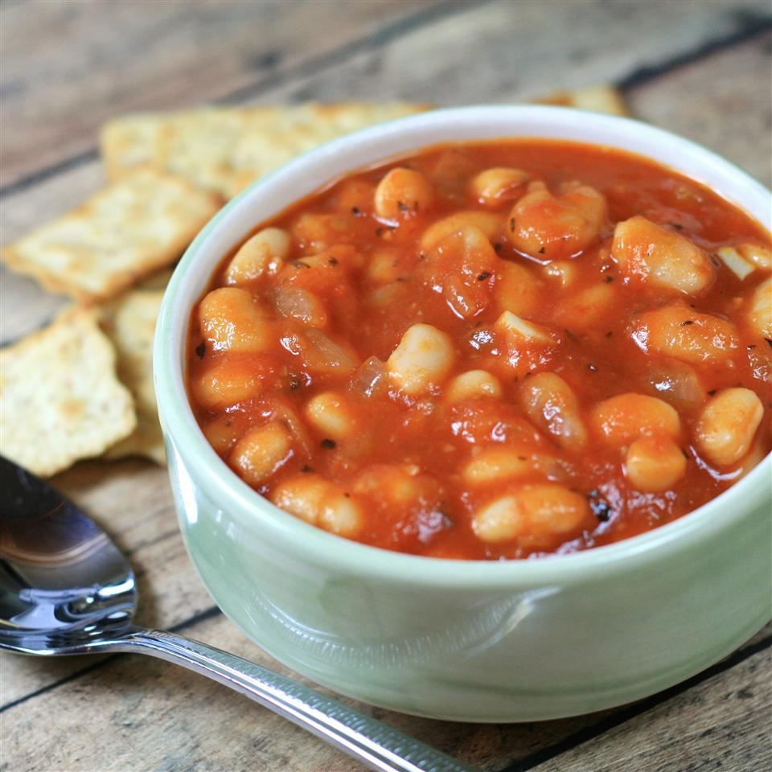

Basic Italian Bean Soup

Description:
Simple and basic Italian bean soup. Great for a quick fix during the week.
My Italian mother-in-law rattled this one out to me over the phone years
ago. So glad I wrote it down quick! She doesn't remember telling me. The
kids love it for a simple and quick dinner
Ingredients
- olive oil
- 1 large onion, diced
- 2 cloves garlic, or more to taste
- 2 cups tomato sauce
- 24 ounces prepared cannellini beans
- 1 tablespoon dried basil
- ½ teaspoon oregano
- salt and ground black pepper to taste
Steps
-
Heat olive oil in a pot over medium-high heat. Cook and stir onion in
hot oil until tender, about 5 minutes; add garlic and continue cooking
until fragrant, 1 to 2 minutes more.
-
Pour tomato sauce into the pot; stir. Add cannelini beans, basil,
oregano, salt, and pepper. Bring the mixture to a simmer, reduce heat to
medium-low, and cook until the beans are hot, 5 to 7 minutes more.
Back to Index